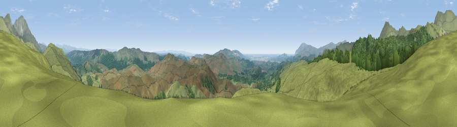

Viewpoint near Torver
#2548 in England · top 20% of its area beats it · near TorverWhere it is
The exact computed spot (SD 25662 92688). Click the marker for map links.
The view, rendered

A 360° render of this exact spot computed from the terrain model, tree cover and land cover — summer colours, afternoon light, calibrated against photographs of famous viewpoints. Real trees, hedges and buildings will differ in detail.
The panorama
Grey silhouette: terrain skyline in each direction (720 bearings, Earth curvature and refraction included). Dashed green: skyline with trees (+15 m) and buildings (+8 m) as obstacles. Blue strip: how far the ground is visible on each bearing.
Where the view opens
Wedge length = distance to the farthest visible ground on that bearing (vegetation-aware). Rings at 10, 25 and 50 km.
What fills the view
78% grassland · 21% woodland ·
Angular shares of the visible panorama (visual magnitude), not map area. Landscape diversity 0.25 (0–1 Shannon).
Key numbers
More beautiful places nearby
The staircase of upgrades: each row has a higher view potential than everything closer. Driving times are estimates from straight-line distance, calibrated against real road routing — check an actual route before setting out.
| Place | Direction | Drive | Score |
|---|---|---|---|
| Lag Bank | NNW · 2 km | ~5 min | 80.2 |
| White Maiden | N · 3 km | ~7 min | 83.0 |
| Caw | NW · 3 km | ~8 min | 83.4 |
| Brown Pike | N · 4 km | ~9 min | 83.8 |
| Buck Pike | N · 5 km | ~10 min | 84.2 |
| Old Man of Coniston | NNE · 5 km | ~12 min | 85.2 |
| Viewpoint near Finsthwaite | ESE · 14 km | ~25 min | 90.3 |
| The Knoll | S · 406 km | ~387 min | 91.0 |
54.32433, -3.14446 · source: screening · position refined by local search. Computed location — check access rights before visiting.